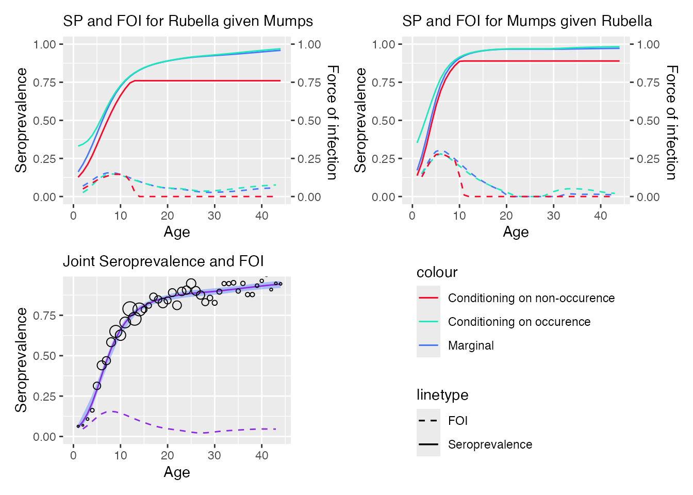
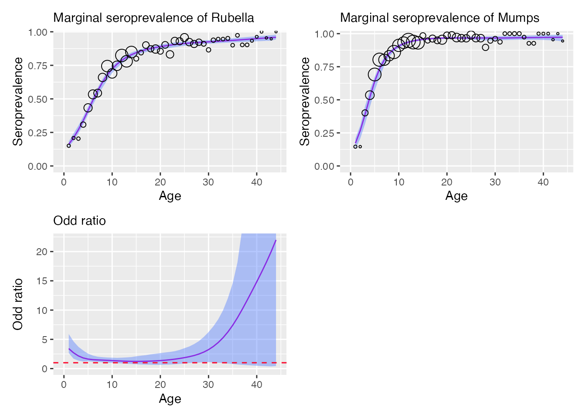

Model visualization
visualizing_model.Rmd
library(serosv)
#>
#> Attaching package: 'serosv'
#> The following object is masked from 'package:base':
#>
#> transformVisualize model
To visualize the model, user can simply use function
plot
hav <- hav_be_1993_1994
model <- fp_model(
hav$age, hav$pos, hav$tot,
p=c(1.5, 1.6), link="cloglog")
plot(model)
#> Warning: `aes_auto()` was deprecated in ggplot2 2.0.0.
#> ℹ The deprecated feature was likely used in the serosv package.
#> Please report the issue to the authors.
#> This warning is displayed once every 8 hours.
#> Call `lifecycle::last_lifecycle_warnings()` to see where this warning was
#> generated.
If implementation for confidence interval calculation is not yet
implemented, plot function would simply visualize
seroprevalence line
rubella <- rubella_uk_1986_1987
rubella$neg <- rubella$tot - rubella$pos
farrington_md <- farrington_model(
rubella$age, rubella$pos, rubella$tot,
start=list(alpha=0.07,beta=0.1,gamma=0.03)
)
plot(farrington_md)
Multivariate model
For bivariate_dale_model, plot function
would have optional additional arguments for labeling or formatting the
plot
data <- rubella_mumps_uk
model <- bivariate_dale_model(age = data$age, y = data[, c("NN", "NP", "PN", "PP")], monotonized=TRUE)Plot seroprevalence and FOI
plot(model, y1 = "Rubella", y2 = "Mumps", plot_type = "sp")
Plot fitted line and confidence interval
plot(model, y1 = "Rubella", y2 = "Mumps", plot_type = "ci")
Format the plot
Function set_plot_style() is provided to customize some
attributes of the plot.
Current modifiable attributes include color, linetype for seroprevalence, foi and fill color for confidence interval
a <- hav_bg_1964
neg <- a$tot -a$pos
pos <- a$pos
age <- a$age
tot <- a$tot
gf_model <- polynomial_model(age, pos, neg, type = "Griffith")
# customize plot
plot(gf_model) +
set_plot_style(
sero = "#3de071",
foi = "#2f22e0",
ci = "#aaf2b2",
foi_line = "dotted",
sero_line = "dotdash"
)
#> Scale for colour is already present.
#> Adding another scale for colour, which will replace the existing scale.
#> Scale for linetype is already present.
#> Adding another scale for linetype, which will replace the existing scale.
#> Scale for fill is already present.
#> Adding another scale for fill, which will replace the existing scale.